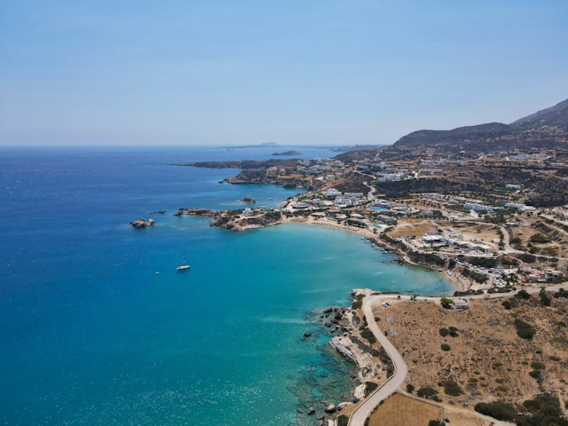

Fakta om Kypros
Her er en liste med 5 fakta:
- Kypros er delt i to: Den sørlige delen er Republikken Kypros (EU-medlem), mens den nordlige delen er Den tyrkisk-kontrollerte Nord-Kypros, som kun er anerkjent av Tyrkia. FNs fredsbevarende styrker patruljerer en buffersone mellom de to delene.
- Ifølge gresk mytologi ble kjærlighetsgudinnen Afrodite født av havskummet ved Petra tou Romiou, en stein ved sørvestkysten av øya. Det er et populært turistmål i dag.
- Kypros har gresk og tyrkisk som offisielle språk, men engelsk er også mye brukt i utdanning, næringsliv og offentlig sektor.
- Republikken Kypros har vært medlem av EU siden 2004, men er ikke en del av Schengen-området. Det betyr at det fortsatt er passkontroll for innreise fra andre EU-land.
- Kypros har vært bebodd i over 10 000 år. Arkeologiske funn viser avansert bosetning helt tilbake til steinalderen.
Reise til Kypros
Kypros er en vakker middelhavsøy som kombinerer sol, strand og kultur på en helt unik måte. Øya byr på imponerende historiske severdigheter, som oldtidsbyen Kourion og Afrodite's klippe, samtidig som du finner moderne feriebyer med gode restauranter, natteliv og flotte strender. Klimaet er varmt og tørt store deler av året, noe som gjør Kypros til et ideelt reisemål både for sommerferie og tidlig vår eller sen høst. For deg som vurderer å reise, kan det være lurt å starte med å velge hvilken del av øya du vil bo i. Sørkysten (som Limassol, Larnaka og Pafos) er mest populær for strandliv og familieferie, mens Ayia Napa er kjent for sitt uteliv. Deretter bør du sjekke flyforbindelser – det går direktefly fra flere byer i Norge i sommerhalvåret, særlig til Larnaka og Pafos. Når fly er bestilt, er neste steg å finne et hotell eller feriebolig – både store resorts og små, lokale gjestehus er tilgjengelige. Husk også å undersøke om du vil leie bil – det gir deg frihet til å utforske fjellområder som Troodos eller små landsbyer utenfor allfarvei. Til slutt: husk pass, reiseforsikring og solkrem – og gled deg til en avslappende, varm og opplevelsesrik tur!
Min erfaring fra å reise dit
Jeg var nylig på ferie på Kypros, og det ble en opplevelse jeg sent vil glemme. Vi bodde i nærheten av Pafos, en sjarmerende kystby med både historie og moderne komfort. En av de første dagene besøkte vi Afrodites klippe, der myten sier at kjærlighetsgudinnen ble født. Å stå der og se bølgene slå mot steinene i solnedgangen var nesten magisk.
Vi brukte også en hel dag på å utforske Kourion, en arkeologisk perle med et fantastisk gammelt amfiteater som fortsatt brukes til konserter. For de som liker historie, er dette et must. Men det var ikke bare sightseeing – vi tilbrakte mange late timer på stranden også, særlig ved Fig Tree Bay, hvor vannet er så klart at du kan se rett ned til bunnen.
En av de mest minnerike aktivitetene var en båttur fra Ayia Napa, der vi snorklet i Blue Lagoon. Det var helt fantastisk å svømme blant fisk i det varme, turkise vannet. På en annen dag tok vi en tur til Troodos-fjellene, hvor klimaet er kjøligere og naturen helt annerledes – perfekt for deg som vil gå turer eller bare ta en pause fra strandlivet.
Maten fortjener også å nevnes – vi spiste ekte kypriotisk meze, med alt fra halloumi og oliven til grillede kjøttretter og fersk sjømat. Folkene vi møtte var utrolig gjestfrie, og det føltes trygt og avslappende overalt vi dro.
Alt i alt var Kypros en perfekt kombinasjon av sol, kultur, natur og god mat, og jeg kan varmt anbefale det videre til alle som vurderer en ferie der!